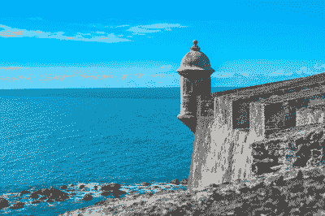

Optimizing Images
return to home
80% JPG
52.8 kb
Good Quality Image
40% JPG
19.6 kb
Acceptable Quality Image
256 GIF
68.8 kb
Good Quality Image
64 GIF
44.4 kb
Acceptable Quality Image

8 GIF
16.7 kb
Poor Quality Image
24 PNG
180 kb
Good Quality Image